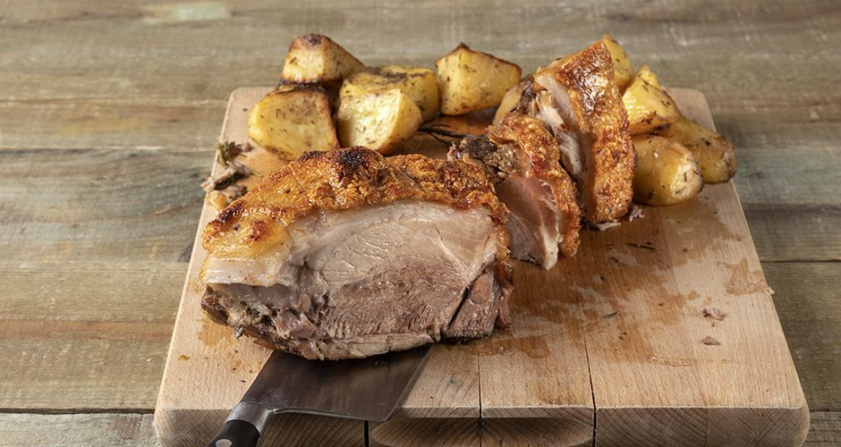

Gourounopoula

Description:Perfectly moist and crispy succulent roast pork.. nothing better than a perfectly cooked roast for a large family dinner!
Ingredients:
- 3 kilos pork, shoulder, skin-on and boneless
- 3-4 tablespoon(s) olive oil
- 2-3 tablespoon(s) vegetable bouillon powder
- 3 clove(s) of garlic
- 3-4 sprig(s) rosemary
Steps:
- Preheat the oven to 180ο C (350ο F) set to fan.
- Score the pork with a knife in a crisscross pattern, skin-side. Lightly score the meat side as well and transfer the pork to a piece of parchment paper, skin-side up.
- Brush the meat with the olive oil, the vegetable bouillon powder, and put the garlic and the rosemary into the parchment paper.
- Wrap the pork very well with the parchment paper and aluminum foil and transfer to a baking pan with a rack, making sure the skin is facing up.
- Roast for 4- 4 ½ hours. Uncover and increase the oven’s temperature to 200ο C (390ο F). Roast for another 20-25 minutes until the skin is golden brown and crispy.
- Serve with pepper and oven-baked potatoes.